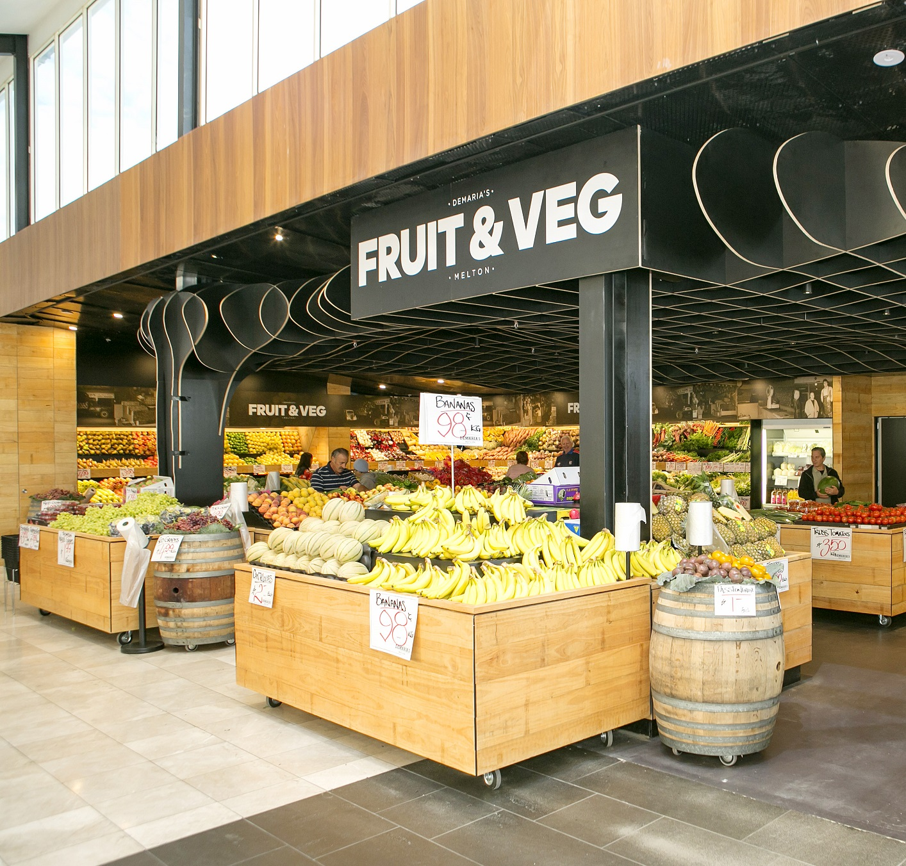
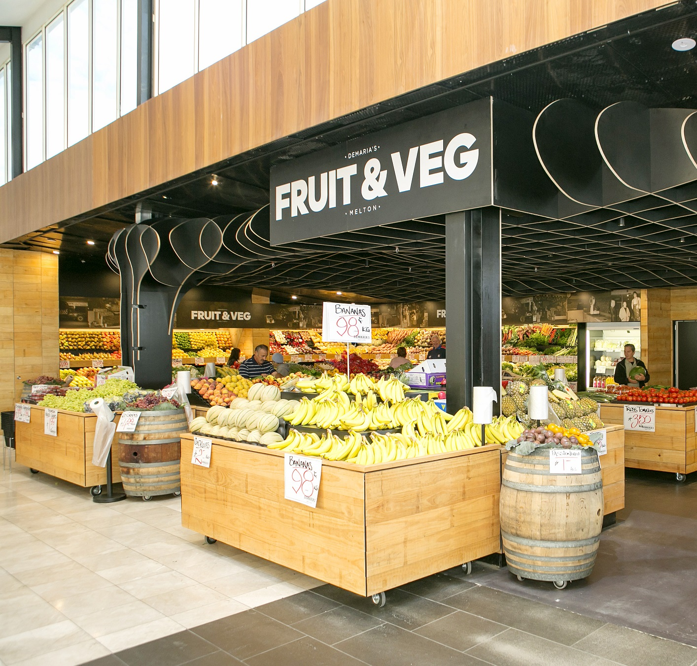

About us: Discover the best in fresh produce at Fruit & Veg, your go-to destination for a wide variety of fruits, vegetables, and healthy food options. Committed to quality and freshness, Fruit & Veg offers an extensive selection of locally sourced and imported produce, along with organic options and specialty items. Whether you're shopping for everyday cooking, juicing, or stocking up on nutritious snacks, Fruit & Veg provides everything you need to maintain a healthy lifestyle.
Working Hours:
Fruit & Veg is known for its vibrant and diverse range of produce, from seasonal fruits to exotic vegetables and fresh herbs. The store also features a variety of nuts, dried fruits, and organic products for those seeking healthier choices. With regular specials, knowledgeable staff, and a commitment to sourcing high-quality goods, Fruit & Veg ensures that you always get the freshest items at great prices. Whether you're prepping for a big meal or simply looking for wholesome ingredients, Fruit & Veg has you covered.